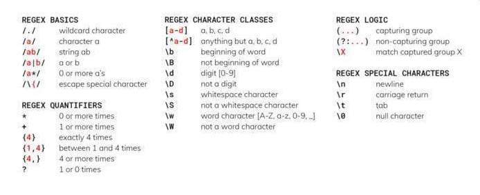

Regular expressions are a language that allows us to search for patterns in text data. Special characters are used to denote specific patterns, which an interpeter uses to compare a string against. Regexes are used commonly in find and find-and-replace operations, and are also useful for verifying the format of an input (e.g. a phone number in a website form).
Regular expressions use several wildcard characters, escaped letters, and sequences to define the patterns that they search for. A (non-comprehensive) list of these is:
Regular expressions define character classes which contain multiple characters that share some attributes. For example, we can define ranges of letters using [a-f]. One of these that is special is the \b class: it does not represent a character but a "word boundary," meaning that it does not consume a character when it is matched. For example, the phrase bombastic sticker will match \bstic once but stic twice, because the first instance of stic does not have a word boundary before it.
One important thing that is not included in the graphic is the second meaning of the ? character. ? can also make any quantifier placed before it "non-greedy." By default, regex quantifiers (*, +, etc.) are greedy, meaning that they will take up as many characters as possible while still matching their pattern. Adding the ? quantifier after another quantifier makes it non-greedy, so that it will take up as few characters as possible. Consider the following sentence:
Lisa, the neighborhood dog-walker, walks all the dogs whose owners don't walk them.
Now let's consider two regexes: [A-Z].*, and [A-Z].*?,. This regex will look for a capital letter ([A-Z]), any number of non-line break characters (.*), and a comma, in that order. The second one has the ? quantifier after the * quantifier, so it will match non-greedily. Because of greedy matching, the first regex will match Lisa, the neighborhood dog-walker,, using as many characters as possible to still match the pattern. Because of the ? quantifier, however, the second one will only match Lisa,. As you can see, we could still have matched more characters in the sentence, but the ? quantifier forced our * quantifier to match non-greedily.
Which of the following regexes will match the shortest sequence of characters in the sentence below? (Note: In regexes, ^, when not inside brackets, matches the start of a line and $ the end of a line.)
"No," said Harvey, "we can't get them to stop. They won't listen to us for some reason."
"[A-Z].*$'\w+',.*?''.*$(c). This regex will match from the first comma to the first apostrophe, with a length of 25 characters. Regexes (a) and (d) match almost the whole thing (because of greedy matching), and regex (b) doesn't match at all, since there are non-word characters between the two apostrophes.
An important concept in regexes is how to "escape" a character. Let's say that you want to match the * character literally in a string; the regex * won't work because the regex engine interprets * as a quantifier. For this reason, regexes provide an escape character, \, that, when placed before another special character in a regex, causes the pattern to match to that character literal rather than the pattern that it represents. To match the * character, we would use \*.
Which regex(es) below will match the \ character?
\\\\w\W(a) and (d). Remember that even though the \ character escapes other special characters, it is itself a special character, and as such must also be escaped to be matched (thus \\ and not \). Because \ is not a word character, it is captured by \W and not by \w.
Python's re library provides its syntax for working with regular expressions.